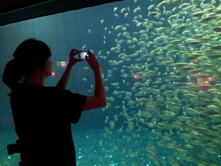

Home
2D
3D
Information
News

Photo credit: Matthew Wethington
Contact
love@jeanettenicolebrown.com
![Artist Statement: I use a variety of media as a result of letting my concepts determine the path of my work. Common reoccuring themes of my work are time, process, and permanence. Usually, one or more of these themes is combined with other ideas from the subjects of history, religion, psychology, geology, and sociology. I’m interested in how humanity connects and constricts the larger universe by the creation and control of our own realities. How do our realities offer us permanence through correct practices? My imagery is often a question or critique of the values we attribute to the rules and objects we create in a society and/or the celebration of the freedom created from letting go.](../images/Buttons/statement.jpg)
![Biography:Jeanette Brown is a multimedia artist that currently resides in Tulsa, Oklahoma. She has spent her life living in Oklahoma, Texas, Kansas, South Dakota, Kentucky, Upper Michigan, and Turkey. She has travelled to many other places as well. Her primary media are film/digital photography and hot glass. She has been practicing in glass for over three years. In photography, she has been composing imagery for twenty five years but developing/editing for the last five. Jeanette received her Associate in Arts from Tulsa Community College. She will be continuing her education to include a Bachelor in Fine Arts with a concentration in hot glass in the near future.](../images/Buttons/bio.jpg)